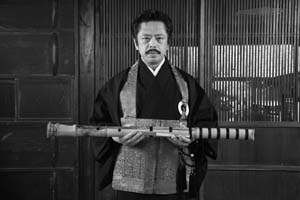
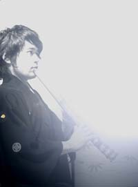
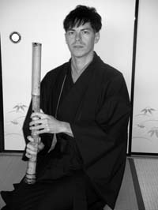
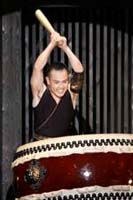
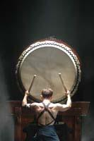

Music Performances
Shakuhachi Concert: Komuso Shakuhachi Travels Around the World
@ International Conference Room (Tuesday, October 27, 18:00-)
The shakuhachi is a Japanese traditional instrument that is popular internationally.
This transverse flute with five holes made of bamboo was born as a Buddhist tool for Komuso,
the monks of Fuke sect of Zen.
The shakuhachi is connected with the sounds of the Zen spirit and its religious influence.
Therefore, its musical structure and playing style has become unique and exclusive to Japan,
which makes it an interesting instrument that you cannot find among any other instruments.
Because of the shakuhachi's characteristic sound it has been used in various genres of music
such as avant-garde music, computer music, popular music, western classical music,
ethnic music etc.
In this lecture I would like to explain the characteristics of shakuhachi music
and its history using live performances of each musical style.
The old shakuhachi called "Jinashi shakuhachi" are a minority in the shakuhachi world,
and today is a rare chance to be able to enjoy the sound of Jinashi shakuhachi,
so please enjoy.
Performers
- Zenpo Simura (Osaka University of Arts, Japan)
- Hidefumi Izukawa (Osaka University of Arts, Japan)
- Josh Smith (Osaka University, Japan)
Biographies
Zenpo Simura

Performer of Jinashi Shakuhachi and Long Shakuhachi, Shakuhachi researcher.
E-Mail: ssimura[at]nifty.com
E-Mail: ssimura[at]nifty.com
Simura Zenpo is a performer of Jinashi Shakuhachi and Long Shakuhachi, and a Shakuhachi researcher.
He graduated from Osaka University of Arts with a major in Technology of Music.
As a student Simura studied shakuhachi with Chikuho Sakai, the founder of the Chikuho School,
and later under Shodo Sakai, the third headmaster of the Chikuho School.
He mastered the Chikuho pieces, Myoan Taizan pieces, Kinpu Ryu-Nezasa pieces, Oshu, Kyushu
and other schools' Shakuhachi Koten Honkyoku pieces.
Along with his academic investigations and research activities,
he learned performing techniques and pieces of the komuso shakuhachi from memory keepers around the country.
Simura earned a Ph.D. in Musicology from Ochanomizu University, Graduate School of Humanities and Sciences,
and published the book An Organology of Old Pipe Shakuhachi.
He presently is a professor in the music department at Osaka University of Arts.
Simura is a permanent director of the Kyochiku Zenshi Housankai,
director of NPO Corporation Japan Shakuhachi Association, and Chikuho Shakuhachi Schoool.
He is a member of the Society for Research in Asiatic Music (Tôyô Ongaku Gakkai, TOG),
Information Processing Society of Japan (IPSJ), the Society for Ethno-Arts, the Musicological Society of Japan,
the Acoustical Society of Japan, the Japanese Association for the Study of Popular Music, and Komuso Kenkyu Kai.
He also opened a jinashi shakuhachi research group and a reference library "SYOHU BUNKO" in 2009
to research and preserve old shakuhachi (kokan) and to provide a place to reevaluate shakuhachi and pass on in the future.
Performing Activities: Simura has done performance research via replicas of old instruments and deciphered old notation,
he has performed and lectured at the International Shakuhachi Festivals as a guest lecturer and performer
(in Boulder, Tokyo, New York, Sydney, etc.).
He has performed Komuso Honkyoku, contemporary music, and popular music, etc. in Europe, Asia, and America
as well as Japan.
He has also appeared on NHK FM, TV lecture for the Open University of Japan, and many radio shows.
Creative Activities: Simura has developed the Cyber Shakuhachi that blended Japanese traditional instruments
and shakuhachi with computer.
His live computer music series called "Takekan no Uchu (Universe of the Bamboo Flute)
that aimed for the modernization of komuso shakuhachi
(collaboration work with Laboratories of Image Information Science and Technology)
won awards at the International Computer Music Conference (ICMC) in Denmark in 1994 and in Hong Kong in 1996.
Publications:
- "Techniques and spirit of making the shakuhachi: for an understanding of the two spiritual worlds in existence today" Der "Schone" Klang, GERMANISCHES NATIONAL MUSEUM (Nurnberg) (1997).
- "Instrumental study of Kokan shakuhachi (Old Shakuhachi)" Shuppan Geijyutsusha (Tokyo) (2002).
- "Encouragement for music culturology - to understand the existing music" Junko Konishi, Mamiko Naka, Simura Satosi (coeditor) Nakanishiya Shuppan (2007).
- "Dictionary Book of world music" Tokumaru Yoshihiko, Takahashi Yuji Simura Satosi (coeditor and coauthor) Iwanami Shoten (2007).
- "Subtle and profound sound - living national treasure Yamaguchi Goro's shakuhachi and his life" Edited by Tokumaru Yoshihiko, Tsuneko Tsukitani, Tokumaru Jumei, Mitsuru Saito (coauthor) Shuppan Geijyutsusha (2008).
Books:
- "Techniques and spirit of making the shakuhachi: for an understanding of the two spiritual worlds in existence today" Der "Schone" Klang, GERMANISCHES NATIONAL MUSEUM (Nurnberg) (1997).
CD Release:
- Hamamatsu Museum of Musical Instruments Collection Series No.6 "Old Shakuhachi 1 - Expression of Sound," HAMAMATSU MUSEUM OF MUSICAL INSTRUMENTS (2005), and more.
Hidefumi Izukawa

Composer, Shakuhachi Performer, PhD student at the Osaka University of Arts
Website: http://www.shaku8.jp/
Website: http://www.shaku8.jp/
Izukawa was born in 1981, and he is from Suita City in Osaka.
He graduated from the Osaka University of Arts in music technology.
He first encountered the shakuhachi when he took a class at the university.
Later, he met Satoshi (Zenpo) Shimura, associate professor and a researcher of Jinashi Shakuhachi.
Sharing Shimura's thoughts, he decided to pursue the succession of the vanishing Komuso Shakhachi.
He is a head of the NPO group "Fuke! Hogaku no Kaze (Blow! The Wind of Traditional Japanese Music),"
which is run by younger members.
He strives to preserve and spread traditional Japanese music with the intention of spreading
the greatness of traditional culture to the world.
He is currently a PhD student at the Osaka University of Arts.
He is a member of the Society of Research in Asiatic Music, Information Processing Society of Japan,
Komuso Kenkyuukai, Kyochiku Zenji Housankai, and Electronic Musical Education Society in Japan.
He is a teaching assistant at the Osaka University of Arts and Kobe Yamate College.
He is an information engineer at the Osaka University of Arts.
Izukawa seeks for the playing style of "Suizen," which is a way of Zen meditation for Myoan Taizan School shakuhachi,
and the sound of Jinashi Shakuhachi called "Neaji (Taste of Sound)."
In 2008, he formed a unit called "Kurofune" with an American shakuhachi player Josh Smith
in whom he found to have "the power to deliver and express which firmly stems from his amount of practice."
They promised to deliver the fascinating sound of Jinashi Shakuhachi and spread their music to the world.
They have recently performed a fusion of shakuhachi and electro acoustic music
at a pre-event for the "Nara Sentosai" and "Takefu International Music Festival,"
and their activities are often followed by the media.
They have been active giving lectures in New York, and Paris, and performing at many museums
and music festivals both in Japan and overseas.
They released their first album "Kurofune" in May 2009, and it was highly reviewed in many places.
He studies Myoan Taizan School shakuhachi under Simura Zenpo and Ikuta School koto under Shimura Chieko.
He has taken professional western music education since he was a child,
and he is versatile having been a member of a rock band to being a singer-song writer.
He has established his own creative policy just as he sought for the unique spirit within Japanese traditional music.
He has worked on sound producing which crosses genres.
He has put his effort in the development of electro acoustic music, and he is attracted to "Acousmatic -Music."
He took the first place in the CCMC Composition Contest in 2008,
and he also won the ACSM116 Award and FUTURA Incentive Award at the same time.
He won the best presentation award at the 81th meeting of IPSJ-SIGMUS.
He joined the MOTUS (France) Composition Atelier 06.
His pieces are sponsored in many international music festivals and performed in FUTURA (France),
Silence (Italy), and aired on the FM radio RSF (France).
He studied composition from UEHARA Kazuo, Acousmatic-Music from DUFOUR Denis, and HIGAKI Tomonari.
Josh Smith

Shakuhachi Performer, Composer, and Researcher, PhD student at the Osaka University
Website: http://joshu-an.com/
Website: http://joshu-an.com/
Josh Smith is from Buffalo, NY and currently lives in Katsuragi City, Nara Prefecture.
He graduated from Buffalo State College and received his Master's degree from the Graduate School of Human Sciences
in the Cultural Sociology Department at Osaka University.
He is currently writing his Doctoral thesis on the shakuhachi and change within this art world
at the Graduate School of Human Sciences at Osaka University.
He studies the shakuhachi under Okada Michiaki, himself a student of the famous Yokoyama Katsuya.
He studies traditional Zen meditation pieces called honkyoku,
but also plays modern and traditional classical music in ensembles as well as writes his own compositions.
In addition to his solo activities in Nara and the Kansai area,
he performs as a unit called "Kurofune" that he formed with Izukawa Hidefumi.
They have performed on TV, as well as national and international radio.
He is a member of the International Shakuhachi Kenshu-Kan, Komuso Kenkyukai,
the Society of Research in Asiatic Music, the NPO group "Fuke! Hogaku no Kaze
(Blow! The Wind of Traditional Japanese Music),
and a friend of Ishikawa Toshimitsu's "Ishi no Kai".
He teaches the shakuhachi in his dojo, "Joshu-an", at his Taima dojo, Naramachi dojo, and Fukui dojo.
Josh earned the second-place award last summer in the World Shakuhachi Competition held at Sydney, Australia.
In February 2009, He received the title of "Master Performer" from Nakanobo at Taimadera Temple in Nara.
He has performed at various events both in Japan and overseas, including the pre-events of the Nara Sentosai,
Takefu International Music Festival in Fukui,
the International Music and Arts Conference at Ateneo de Manila in the Philippines,
and Burchfield-Penny Art Center in Buffalo, NY etc.
He released his solo CD called "Sound of the White Phoenix" in November, 2008
that contains traditional Zen meditation pieces and original shakuhachi music,
and he had a CD release concert at Taimadera temple.
In May, 2009, Kurofune released their first self-titled album that Izukawa Hidefumi sound produced
with the shakuhachi and electro-acoustic music.
Together with Izukawa's mastery of classical western music, Japanese music, and composition,
they have performed throughout Japan, Canada, and NY,
bringing a unique blend of traditional music with modern elements to their listeners.
Josh strives to maintain a traditional sound as well as explore new outlets of creativity in various genres of music.
Taiko Performance
@ Kobe Kachoen (Thursday, October 29)
Traditional but new-----That's Taiko.
Taiko drums have been used in such time-honored Japanese performances as Noh,
Kabuki and shinto shirine rituals for over 1,400 years in Japan.
On the other hand, the kumi-daiko style ensemble which includes various kinds of taikos
have a relatively short history originating in the 1950's.
Taiko performance always entertains an audience.
Please enjoy Taiko performance and Taiko-beat to affect a heart and health.
Performed by Makoto Nakajima & Fuku-Kabocha


Born in Kyoto. He is one of the original members of Wadiko Ensemble,
which was the precursor of MATSURISHU. Now he is a leading player of
"FURYU DAGAKU MATSURISHU". He also backed up Leonard Etoh at
ANONIYOSHI. He has performed in more than 1,000 concerts. His co-stars
are Osamu Okada (Tsugaru Shamisen player), Shintaro Sendo (Nihon Ongaku
Shudan), Shigeyama-Syachu (Ookura-ryu Kyogen group) and more. His
O-daiko (gianat taiko) playing always amazes the audience.
He performs with "FUKU-KABOCHA" this time. They perform around Kyoto.
Their stage is powerful and entertains us. The member of "FUKU-KABOCHA" is YUUMA TANAKA and RYOU HITOMI.